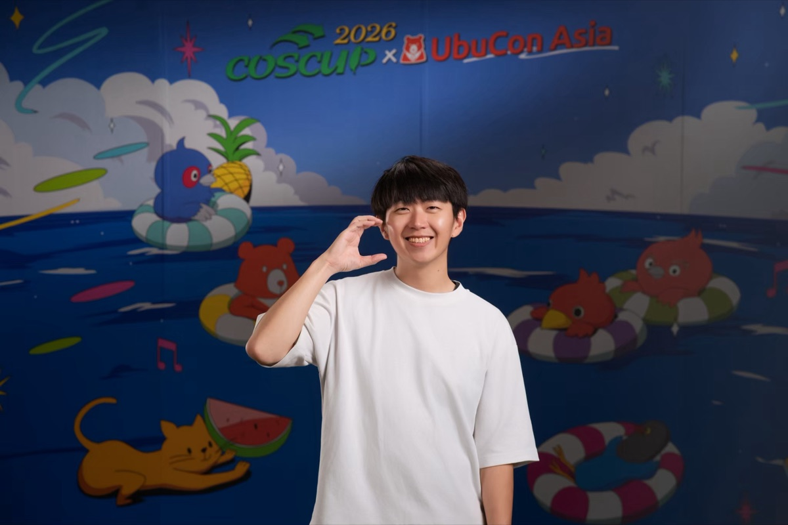
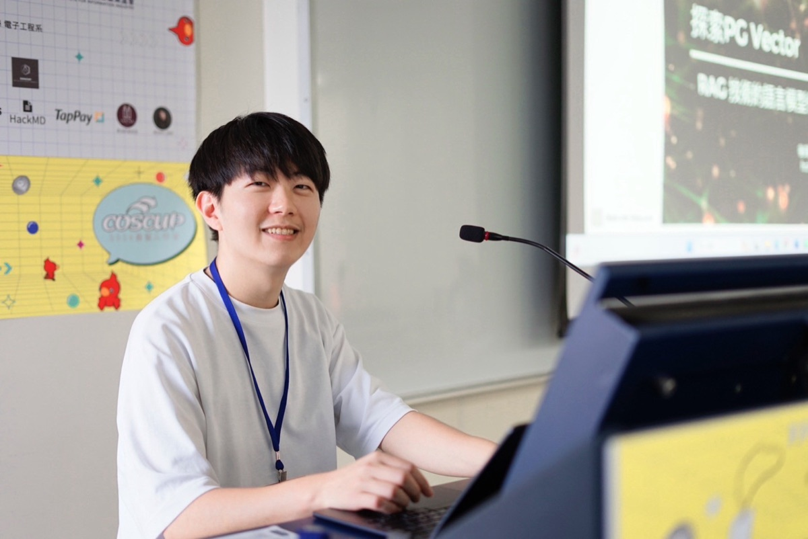

1 / 3
AI 核心採購，流程與驗收自建
- 為什麼
- AI 迭代速度過快，自建核心追不上大廠。
- 為什麼不選另一邊
- 自建核心會把人力耗在追版本，而公司的差異在任務流程與驗收規則。
- 撤銷條件
- 採購產品無法承載公司的驗收規則，或成本結構反轉。
這是 trunk 建置範本，直接開檔案不會正常顯示。請執行 src/preview.sh，再開 http://localhost:8765/
後端里長伯 Hohshen企業架構師COSCUP 連續三年講者
我是後端里長伯 Hohshen，製造業的企業架構師。白天把核心系統從總部接到工廠、把 AI 從概念驗證送進全公司日常營運的軌道；晚上把這些取捨寫成文章與演講。這一頁上的每個數字，旁邊都有出處。
我擅長的不是追工具，是做取捨。自建或採購，哪些判斷交給機器，哪些留給人。這些取捨最後都要寫成別人也驗得出來的東西，不然只是我的品味。
0 km發射台
我寫的每一篇、講的每一場，素材都從這裡起飛。數字只抄不算；出處兩態：媒體報導附公開連結、內部資料面談可說明。
50 km平流層頂
沒上線過的不講。三步，缺一步就不發。
題目一定先在真的系統上做過：核心系統、AI 數位員工、QA 自動化。
每個決定填四欄：為什麼、為什麼不、撤銷條件、出處。填不出撤銷條件的，代表還沒想清楚。
只用驗得出來的數字。有公開連結就連，沒有就標內部資料，面談可追問。
100 km卡門線
卡門線是大氣層與太空的分界。AI 專案能不能離開概念驗證，差別不在技術，在這幾個取捨有沒有寫成制度。這也是我每篇文章的骨架。
400 km低地軌道
入軌之後就是持續運行。每條線各回答一個問題，你拿到的是方法與帳本，不是結論。篇數與狀態如實標示。
每個架構決定都算維運、認知與換掉它的代價。先算帳再選，不先選再找理由。你會帶走：一張架構的帳
6 篇，撰寫中「做到什麼算完成」怎麼寫到 PM、工程師與 AI 看同一份。附我在公司裡用的交付閘門。你會帶走：一份驗得出來的規格
4 篇，撰寫中自建或採購、哪些判斷交給機器、哪些留給人。全公司 99% 同仁每月在用的體系怎麼長出來的。你會帶走：一套 AI 落地的取捨
系列，撰寫中倒排索引到向量、GraphRAG、SAG。每一代解決了什麼、又把什麼留給下一代，用 PostgreSQL 實作。你會帶走：一條搜尋技術的演進線
10 篇，撰寫中30 篇。ACID、鎖、MVCC、WAL、查詢優化、索引結構、資料分割與讀寫分離。已公開：iThome 鐵人賽 2023
閱讀 30 篇36,000 km同步軌道
同步軌道上的衛星負責廣播。公司裡驗證過的做法，透過演講往外送；2024 至 2026 共 12 場，COSCUP 連續三年，JSDC 與 MOPCON 付費講師。




地面站通訊
何勝，網路上叫後端里長伯。製造業的企業架構師，負責企業系統與 AI 導入的架構決策與交付制度。
之前做過資安產品的特權存取管理平台，更早在系統整合公司帶 5 至 8 人團隊，設計過支撐近 10 萬盞設備的智慧路燈平台。三個產業共通的是高併發資料與跨部門交付。主力是 TypeScript、PostgreSQL、Kubernetes 與 LLM 周邊。國立臺北大學資訊工程學系。
PostgreSQL 與 AI 檢索（pgvector、GraphRAG、SAG）、AI 開發團隊怎麼建、規格與架構的取捨。每一場的素材都是公司裡先跑過一輪的。
中文。投影片中英混排。
鐵人賽 30 篇已公開。四條線的稿件已定稿，公開後連結會補在寫作區。
聊的時候我會說明量法與分母：模組怎麼數、覆蓋率怎麼算、測試情境成長的起訖點。可以追問到任何一個數字的來源。
寄信到 hohshen@gmail.com，標題寫邀請演講或合作，內文一句話說明場合與題目方向即可。
對接Docking
寄信時寫一句場合與題目方向就好。我會在兩個工作日內回覆。
邀請我演講或合作